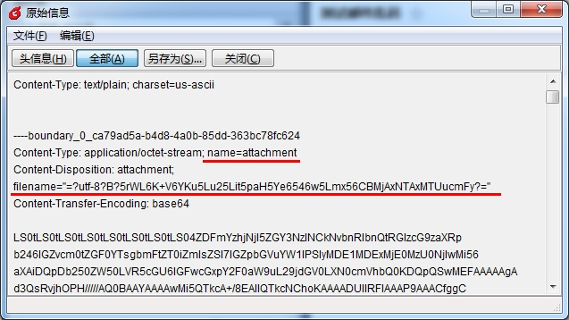

在用户环境发现一个现象，使用System.Net.Mail.SmtpClient发送邮件，当附件名包含中文且长度较长时，最终的邮件里附件名会乱掉，写个简单的测试程序：
var mail = new MailMessage("from@test.com", "to@test.com");
mail.Subject = "测试邮件乱码";
var atta = new Attachment(@"C:\测试邮件中文出现乱码20150115.rar");
mail.Attachments.Add(atta);
var smtp = new SmtpClient();
smtp.Host = "test.com";
smtp.Credentials = new NetworkCredential("from", "test");
smtp.Send(mail);
使用Foxmail接收邮件，然后查看邮件原始信息，发现附件部分的MIME居然是这样的：
这个怪异的name导致了在邮件客户端里显示乱码。换不同的机器测试，有些机器是正常的，说明与软件环境有关。正常的邮件应该是这样的：
研究了一下，发现是.Net Framework的BUG，详见微软网站：http://support.microsoft.com/kb/2402064， 当附件名超过41个utf8 byte时，会错误的进行2次编码导致的。 补丁见 https://connect.microsoft.com/VisualStudio/Downloads/DownloadDetails.aspx?DownloadID=31723。
如果服务器未升级，可以暂时修改程序来避开这个BUG，主要是手工指定附件的名称：
var mail = new MailMessage("from@test.com", "to@test.com");
mail.Subject = "测试邮件乱码";
string file = @"C:\测试邮件中文出现乱码20150115.rar";
var atta = new Attachment(file);
string name = Path.GetFileName(file);
string base64 = Convert.ToBase64String(Encoding.UTF8.GetBytes(name));
atta.ContentDisposition.FileName = string.Format("=?utf-8?B?{0}?=", base64); //指定附件的filename
atta.Name = "p_w_upload"; //指定MimePart的Name，不包含中文，这样就不会被BUG影响
atta.NameEncoding = Encoding.UTF8;
mail.Attachments.Add(atta);
var smtp = new SmtpClient();
smtp.Host = "test.com";
smtp.Credentials = new NetworkCredential("from", "test");
smtp.Send(mail);
此时收到的邮件是这样的，注意划红线部分：
